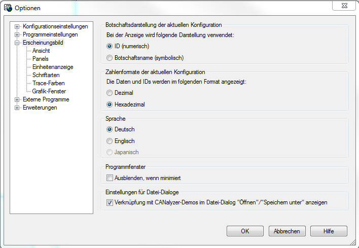

Mo 11.01.2016 18:20
Wenn die Messung in asc nicht mehr die IDs speichert, sondern den message-Namen aus dem dbc-File, dann kann unter Option-> Erscgheinungsbild die anzeige auf Botschaftsname stehen
Es muss auf ID (numerisch) stehen
